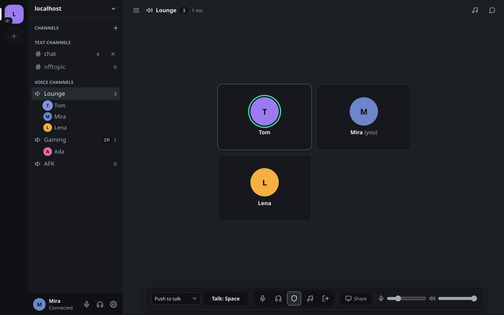
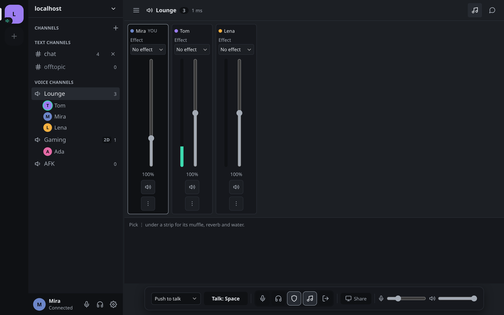
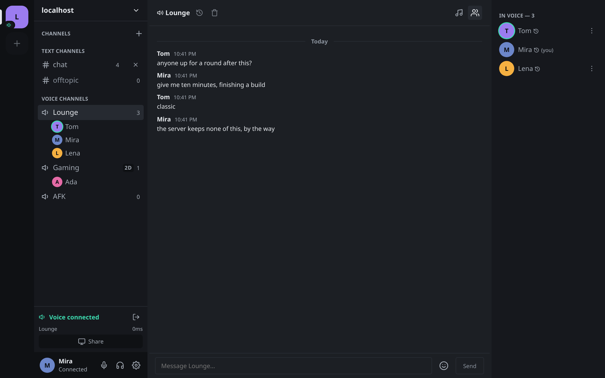
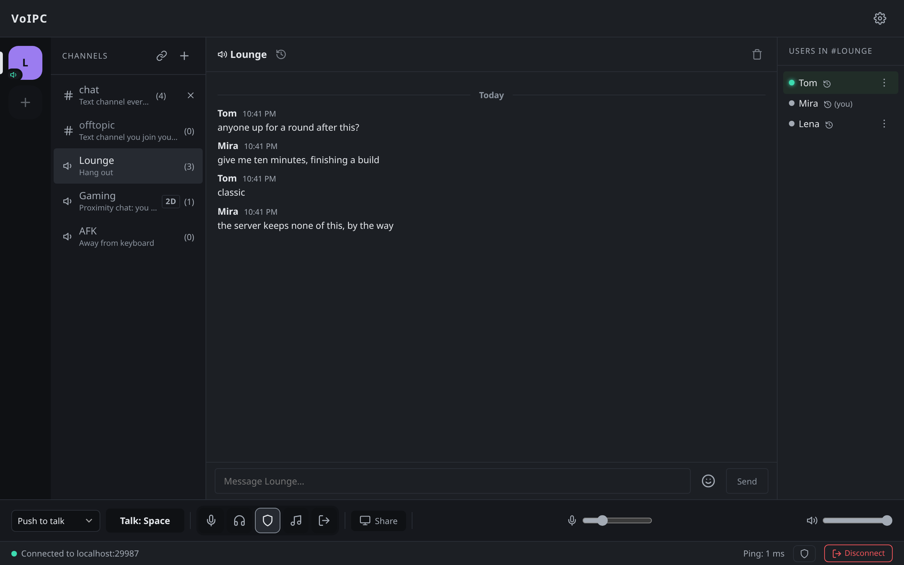

| Selected | Password | End-to-end encrypted | Server | Running | Players | Ping | Join |
|---|---|---|---|---|---|---|---|
| ivy.l4f.cc:9987the public demo, run by the VoIPC project: try it | Voice · Share · Chat · Files | — | — | Join | |||
Voice, screen sharing and chat — on a server you run.An open-source alternative to Discord and TeamSpeak. The relay forwards what it cannot read: Signal Protocol for messages, AES-256-GCM for voice and video. Without accounts it keeps nothing past a restart. 
|
|||||||
One server here: the public demo, run by the VoIPC project for trying it out. Every other VoIPC server is run by its own group; there is no list of them, and no VoIPC server in the middle.
Server info
Three things, done properly: talking, showing your screen, writing.
Voice
Opus at 48 kHz in 20 ms frames, tuned for speech. RNNoise noise suppression runs on your device, and echo cancellation on the desktop and on Android.
- Push to talk, voice activation or always on, with system-wide push-to-talk and mute/deafen hotkeys
- In-band FEC rebuilds a lost packet from the one that follows it
- An adaptive jitter buffer grows from 40 to 160 ms only when the network needs it
- Per-person volume, 0–400% microphone gain, a mixing desk with effects per lane
- codec
- Opus, 48 kHz mono, 20 ms, 48 kbps, DTX
- loss repair
- in-band FEC, then concealment
- audio i/o
- ALSA · WASAPI · Oboe (Android)

Chat & servers
Channel messages and direct messages ride the Signal Protocol: the relay passes on ciphertext it cannot read. History is optional and kept on your own disk, encrypted. A server with accounts can also keep end-to-end-encrypted copies for you, if you choose.
- Several servers open at once; text channels are subscriptions, voice is one channel at a time
- Password-protected channels, invites and pokes, encrypted too
- Messages that delete themselves after a while, per channel or per conversation
- Files and pictures, sealed on your device; nothing downloads until you press Load
- Replies, threads, Markdown, reactions, and editing what you wrote
- Persistent rooms from a
channels.jsonon the server

Proximity & games
A channel can place voices in space: 2D on a floor plan, or 3D with height. Distance makes a voice quieter, direction moves it left or right, a wall muffles it: the same maths Mumble and TeamSpeak use, done on your own machine. Positions are encrypted with the channel key like voice, so the relay passes them on blind.
- A virtual room: arrange everyone yourself, or share your own position with the channel; presets for a round table, a class room, a line
- A game SDK: a mod drives positions over a local socket, with thirteen radio and phone chains and a ready-made FiveM resource with radio and calls
- One speaker, heard several ways: a colleague two metres away who keys a radio arrives twice, over the air and as themselves
- Yours to allow: broadcasting your position and pressing your push to talk are separate switches, both off by default
- modes
- off, 2D or 3D per channel; operators can switch it off server-wide
- sdk
- a local socket, no plugin and no licence server
- docs
- docs/SDK.md · docs/GAMES.md
Three layouts, one app
Modern is what a new install starts in. Classic is the arrangement VoIPC always had. Stage puts the call in the middle. Switch any time in Settings; every colour can be changed one by one, and a palette has to clear WCAG AA in the unit tests before it ships.

Server rules
What every VoIPC relay does, read straight off it.
| Rule | Value | What it means |
|---|---|---|
| relay.reads_messages | 0 | Messages ride the Signal Protocol (X3DH, Double Ratchet, sender keys) through the official libsignal crate. The relay forwards ciphertext. |
| relay.reads_media | 0 | Voice, video and positions are AES-256-GCM per packet, with per-channel keys handed out over pairwise Signal sessions. The relay decodes nothing. |
| relay.storage | memory | Without accounts it keeps nothing it can read. Messages, voice and positions pass through memory; files posted in chat sit on its disk only as ciphertext, for a day at most by default, and every restart wipes them. A restart is a clean slate, but for the bans an admin set. |
| accounts | off · optional | Turned on by the operator, it keeps a database: names, sign-ins, who wrote where and when, and ciphertext it cannot open. |
| transport | tls 1.3 | Everything rides one QUIC connection; self-signed certificates are pinned on first connect, and a changed fingerprint stops the connection. |
| history | local | Optional, on your own disk: PBKDF2 at 600,000 iterations and AES-256-GCM, a fresh salt and nonce per file. |
| telemetry | 0 | None, in the apps, the relay or on this page: no analytics, no cookies. |
| audit | none | VoIPC has not had an independent security audit. The code is MIT-licensed and small enough to read: audit it yourself. |
| What | Relay, no accounts | Relay, accounts on | Your device |
|---|---|---|---|
| messages | forwarded, never readable | encrypted copies members choose to keep | optional encrypted history, up to 500 per channel |
| voice · video · screens | forwarded, never readable | forwarded, never readable | not stored |
| files | sealed copies it cannot open: 30 min after the last fetch, a day at most by default; wiped at every start | the same | the files you sent or loaded, still sealed: up to 1 GB by default (256 MB on Android; in the browser, in memory only) |
| who is where | names and channels, in memory, while connected | also who wrote where, when and how much | saved servers and settings |
| addresses | in memory, during the session | sign-ins, with addresses hashed | — |
| secrets | hashed channel passwords; encrypted media keys | a password-derived hash; sealed two-factor secrets | your private keys; with an account, the remembered device and vault keys |
| after a restart | nothing but the bans an admin set | the database | as above |
| analytics | none | none | none |
Compared
Feature by feature, kept checkable.
Eight columns: scroll sideways for all of them.
| Server | E2E chat | E2E voice & video | Self-hosted | Open source | Account needed | Keeps | In a browser |
|---|---|---|---|---|---|---|---|
| VoIPC | Signal Protocol | AES-256-GCM | Yes | MIT | No, unless the server asks | No messages by default; files encrypted, a day at most | Yes, encrypted |
| Discord | No | Partly (DAVE, calls) | No | No | Yes | Everything, in its cloud | Yes |
| TeamSpeak | No | No | Yes | No | No | Logs and a database | No |
Clients
Honest support status: nothing listed that does not run today.
| System | Voice & chat | Share a screen | Watch a share | Desktop audio | Download |
|---|---|---|---|---|---|
| Linux | Yes | PipeWire | Yes | PipeWire | AppImage.deb |
| Windows | Yes | Windows.Graphics.Capture | Yes | WASAPI | Installer |
| Android | Yes | — | Yes | — | APK |
| Browser | Yes | getDisplayMedia | Yes | where the browser offers it | Nothing to install: try the demo, or open any server's address |
| macOS | — | — | — | — | Not supported yet; the browser client works |
Coming from 1.0? 1.3 speaks a new protocol: update your server first, then the apps. A 1.3 app cannot connect to a 1.0 server, and does not go back to 1.0 by itself. The browser needs nothing; Android and the .deb install over the old one.
Browsers need Chrome 97, Edge 98, Firefox 130 or Safari 26.4 (WebTransport and WebCodecs). Every release is signed and listed in SHA256SUMS; how to check one is in the changelog.
Host one
One static binary, a certificate, and port 9987.
# the relay, ready-built for Linux x86_64 $ curl -LO https://github.com/luki4fun/voipc/releases/download/v1.5.0/voipc-server-linux-x86_64 $ chmod +x voipc-server-linux-x86_64 # a self-signed certificate for this machine's name and address # (browsers check them: set HOST and IP to the public ones if they differ) $ HOST=$(hostname -f) IP=$(ip route get 1 | grep -o 'src [0-9.]*' | cut -d' ' -f2) $ mkdir -p certs && openssl req -x509 -newkey ec \ -pkeyopt ec_paramgen_curve:prime256v1 \ -keyout certs/server.key -out certs/server.crt \ -days 365 -nodes -subj "/CN=voipc" \ -addext "subjectAltName=DNS:$HOST,IP:$IP" # run: UDP 9987 for every client, TCP 9987 for the browser page $ ./voipc-server-linux-x86_64
Configure it with flags or a server.toml passed with -c; a channels.json beside it adds rooms that stay. Set admin_token, or take the one printed in the log, to moderate.
The same binary serves the browser client over HTTPS on the TCP port, so a friend with nothing installed opens the server's address on port 9987 in a browser and joins, as with the demo. Where UDP is blocked, --tcp-fallback tunnels the call over TCP.
Building from source, Docker and accounts: BUILDING.md · OPERATING.md · ACCOUNTS.md